和
和  的二次方程，这个方程是
的二次方程，这个方程是我将在第 13 章中介绍的几何对近世代数产生了极其重要的影响。后文将试着沿着其影响的本质和进展展开叙述。我只想在这里介绍与代数几何有关的几个基本思想。按照悠久的数学传统，我将用圆锥截线来介绍。
※※※
圆锥截线通常称为“圆锥曲线”，是一些平面曲线的总称，用平面截一个圆锥就可以得到圆锥曲线。（还要注意，在数学上，人们认为圆锥不止于它的顶点，而是向两个方向无限延伸。）在图 AG-1 中，截面是你在读的这张纸面，你必须把它想象成透明的。这个圆锥的顶点在这个截面的后面。在第一幅图中，圆锥的轴正好与纸面成直角，所以截线是圆。然后，我旋转这个圆锥，把圆锥的远端向上提，于是这个圆变成一个椭圆。当我继续把这个圆锥向上提时，这个椭圆的一端“趋于无穷”，我会得到一条抛物线。将这个圆锥继续向上提起，越过顶点时，我会得到两部分曲线，它们被称为双曲线 1 。
1 “椭圆”“抛物线”和“双曲线”这些词都是由古希腊数学家阿波罗尼奥斯给出的。
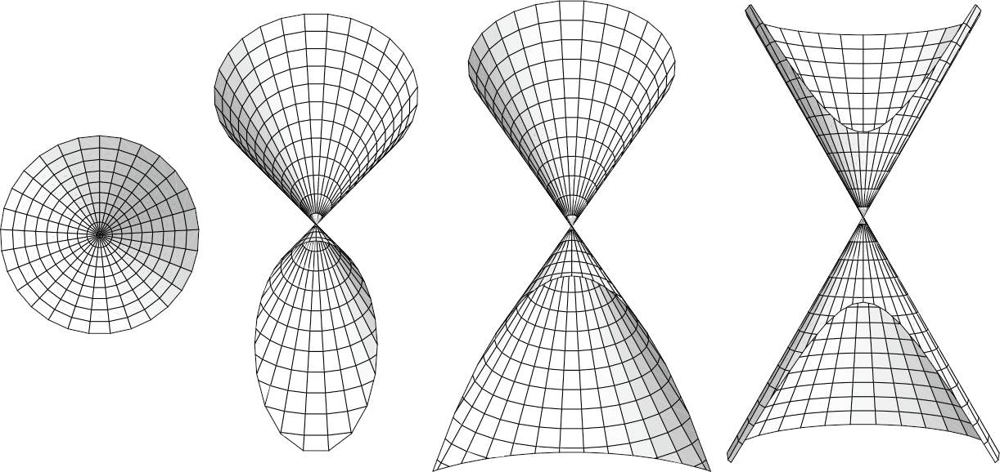
图 AG-1 纸面截圆锥得到的圆锥曲线
这些当然都是几何。为了得到代数，我们必须跟随笛卡儿。对于定义一条圆锥曲线的无穷多个点，其笛卡儿坐标满足一个关于
和
的二次方程，这个方程是
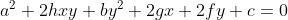
（上面的方程的系数所选用的字母—— 、
、 、
、 、
、 、
、 ——可能看起来有点儿奇怪，稍后我会解释。）表述这件事的另一种方法是，一条圆锥曲线就是某个二元二次多项式的零点集
。它是满足以下条件的点
——可能看起来有点儿奇怪，稍后我会解释。）表述这件事的另一种方法是，一条圆锥曲线就是某个二元二次多项式的零点集
。它是满足以下条件的点
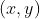
的集合：将 代入多项式中，计算结果为 0。例如，图 AG-2a 中的椭圆的方程是
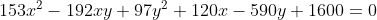
现在，如果把这个椭圆移动到这个平面的其他地方，然后再像图 AG-2b 那样稍微旋转一下，那么这个代数方程会发生什么变化呢？
这个方程当然会改变。对于这个椭圆，它的新方程是
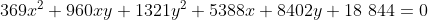
但是，它仍然代表同一条圆锥曲线 。它的大小和形状都没有改变，它既没有变大也没有变小，既没有变圆也没有变扁。
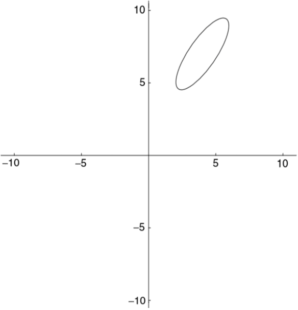
图 AG-2a
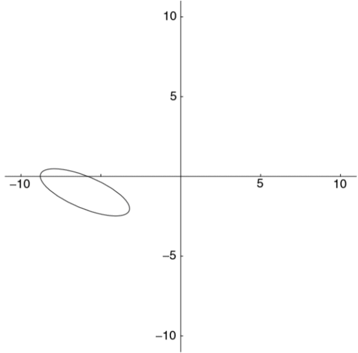
图 AG-2b
于是就出现了下面这个非常有趣的问题：在这两个代数表达式中，是什么告诉我们它们表示的是同一条圆锥曲线呢？在从一个方程变成另一个方程的过程中，什么保持不变？或像数学家说的，不变量 是什么？
答案并不是显然的。所有系数的大小都改变了，而且其中两个系数的符号也发生了变化（负号变正号）。但是，不变量还是隐藏于其中。再次给出方程的一般形式：
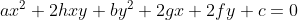
计算以下数值：
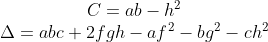
在前面两个椭圆方程中， 分别计算得 5625 和 257 049，
分别计算得 5625 和 257 049，
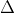
分别为 -1 265 625 和 -390 971 529。显然这些数值也不是不变量。但是注意：计算两种情况下的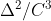
，结果都是 9。无论把这个椭圆移动到平面的什么地方，无论怎样旋转它，无论由此得到什么方程，根据方程的系数计算， 的结果都是 9。 是一个不变量 。事实上，如果先取这个数的平方根，然后再乘以 π，我们就可以得到该椭圆的面积。在平面上移动该椭圆时，它的面积显然是不变的。椭圆的面积
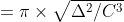
下面是另一个不变量。使用系数
、
和刚才计算的
求以下二次方程的两个根：
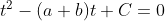
用较小的根除以较大的根，再用 1 减去这个商，再取平方根，得到的数通常称为
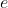
（或者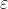
，以便与欧拉常数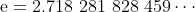
区别，欧拉常数是自然对数的底），它衡量了这个椭圆的离心率 ，即这个椭圆偏离圆的程度。如果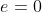
，那么这个椭圆就是 圆；如果 ，那么这个椭圆实际上是抛物线。显然，这应该是一个不变量，确实如此。如果计算上面给出的椭圆的两个方程的 ，那么结果都是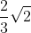
，约等于 0.942 809 04，与圆相比，它更接近抛物线。可以想象，这是一个长长瘦瘦的椭圆。这个椭圆的实际大小是多少？当椭圆被移动时，大小不会发生变化。它们也应该是系数背后的不变量吧？是的。将刚才计算的不变量
记为  ，那么这个椭圆的长轴是
，那么这个椭圆的长轴是
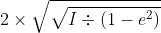
短轴是
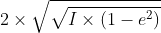
如果对上面那个椭圆的两个方程进行计算，可得其长轴都是 6，短轴都是 2。同我们所期待的一样，这些数都是不变量。
※※※
我在前面花了一些时间介绍笛卡儿几何的基本内容，因为它不仅让我们看到了不变量的思想，而且也让我们看到了近世代数中一些其他关键想法。
例如，关于圆锥曲线的讨论中还隐含着矩阵 的思想。对于前面给出的圆锥曲线的一般方程，这个重要的矩阵是
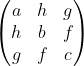
学数学的学生通常用下面这句话来帮助记忆这个矩阵中元素的顺序：“A ll h airy g uys h ave b ig f eet.”我们可以用第 9 章所描述的方法求出这个矩阵的行列式。这个矩阵的行列式就是我在上面定义的 。
如果在某个笛卡儿坐标系下给定一条圆锥曲线的方程，计算出它的 的值为 0，那么该圆锥曲线是一条“退化”的圆锥曲线：它或者是一对直线，或者是一条直线，或者是一个点。你可以用这个例子来验证：对于点 (0, 0) 和方程
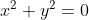
， 的确为 0。※※※
为了了解另一个论题，我们回顾一下前面提到的问题：为什么圆锥曲线的一般方程中通常表示系数的字母——
、
、
、
、
、 ——这么奇怪？这里没有
——这么奇怪？这里没有  和
的原因容易解释：
可能与微积分中使用的
和
的原因容易解释：
可能与微积分中使用的
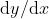
相混淆，而 可能与欧拉常数 e 相混淆。但是为什么这些字母的排列顺序是这样的呢？为什么一般方程不写成下面这种形式呢？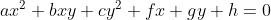
答案是，简单的笛卡儿平面解析几何的确不是研究圆锥曲线的最好的工具。事实上，如果允许存在无穷远点 ，那么圆锥曲线更适合用代数来处理，而这种几何不允许存在无穷远点。我给出的圆锥曲线的一般方程是从一种更复杂的几何中来的，这种几何允许存在无穷远点。
对非数学专业人士来说，术语“无穷远点”听起来似乎有点儿令人困惑。其实这只是被引入几何 2 中来简化事物的一种表达方式而已。例如，如果允许存在无穷远点，那么难以处理平行线的情况就消失了。于是，原来的说法：
2 尽管文艺复兴时期的画家们在解决透视问题时一定想到了“无穷远点”这个概念，但是大约在 1610 年天文学家开普勒（1571—1630）才把无穷远点引入数学中。开普勒把直线想象成圆，其圆心在无穷远处，这个概念可能来自他的光学研究，在光学里想象无穷远点就变得很自然了。
平面内任意两条不平行的直线都交于一点，两条平行直线不相交，
可以改为：
平面内任意两条直线都交于一点。
我们对此可以理解为，想象成两条平行线在一个无穷远点相交。你现在也许不理解这种做法的重要性，但是不可否认，这是一种简化。
然而，在平坦的欧几里得平面内，传统且好用的笛卡儿坐标系不能解决这个问题。如果用笛卡儿坐标描述一个无穷远点，你只能想到写成 (∞,∞)。这只是一个点。然而，直觉告诉我们，如果一对平行线在一个无穷远点相交，那么与它们不平行的另外一对平行线应该在另一个不同的 无穷远点相交。换句话说，我们需要很多无穷远点。
表示无穷远点的另一种方法，就是用有三 个坐标的坐标系取代通常的有两个坐标的坐标系。用坐标
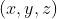
表示平面上的点，而不再用 表示。我们在这里需要采取一些预防措施，以防止这种表示方法变成一种三维几何。下面是一个限制条件：我们认为与
、
、 具有相同比例的所有坐标
代表同一个点。例如，(7, 2, 5)、(14, 4, 10) 和 (84, 24, 60) 都代表同一个点。这不是什么新想法，我们在小学时就已经知道
具有相同比例的所有坐标
代表同一个点。例如，(7, 2, 5)、(14, 4, 10) 和 (84, 24, 60) 都代表同一个点。这不是什么新想法，我们在小学时就已经知道 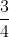
、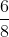
、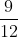
、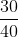
等都表示同一个分数。这个限制条件可以把维数压回到二维。另一种考虑这种新坐标系的方法是，分别用
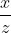
和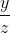
代替
和
。如果
是 0，
和
当然无法计算：它们就是“无穷远”的。新的三个坐标的坐标系避免了这些小麻烦。我们只需通过让
等于 0 就可以表示无穷远点。此时，我们可以认为 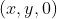
、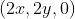
、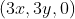
以及所有其他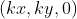
都表示同一个无穷远点，只不过表示方法不同而已；而且这样的无穷远点有很多，不止一个。事实上，它们都位于同一条直线上，这条直线的方程是
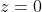
。这条直线被称为“无穷远直线”，如果现在你遇到它，你就应该不会感到惊讶了。只有一条无穷远直线，它是由很多无穷远点组成的，不同的无穷远点可用不同的坐标来表示。这种在通常的笛卡儿几何中添加一条无穷远直线的新几何被称为射影几何 。我描述的新坐标系能让射影几何符合一些算术要求。但最纯粹的射影几何与坐标无关，它只与那些被投影后仍然正确的几何原理有关。想象一张透明投影片上画着一幅几何图形，这张投影片与平面成一定角度，用来自点光源的光照射它，于是投影片上的几何图形就被投影到这个平面上。在此过程中，一些几何性质不再成立了。例如，圆不再是圆，它变成了圆锥曲线。但是，有些性质仍然成立。我将在第 13 章详细讨论这个问题。
※※※
在新坐标系下，圆锥曲线的方程会变成什么样子呢？让我们试着在原来的圆锥曲线方程中分别用
和
代替
和
：
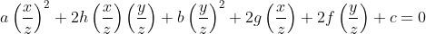
将上面这个方程的两端同时乘以
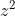
，就得到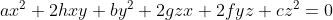
稍稍改变一下各项的排列顺序可得
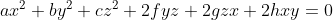
此时，按照
、
、
、
、
、
的顺序排列的理由就很清楚了。在这个新坐标系下，出现了  、
、
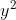
、 项，还有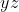
、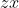
、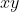
项。注意其中的对称性 ！33 事实上，不是所有作者都使用这种写法。例如，迈尔斯·里德（1947— ）在他的大作《大学代数几何》（Undergraduate Algebraic Geometry ，1988 年由剑桥大学出版社出版）中把一般的非齐次二次多项式写成
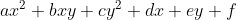
的形式。从严格的数学意义上说，这里得到的不是真正的对称性，而是齐次性 。事实上，这种类型的坐标被称为齐次坐标 。尽管如此，这毕竟是朝着正确的方向前进了一步，同时也展示了对称的概念在现代数学中有多么强大的吸引力。
※※※
新坐标系引出了现代数学中另外一个极为重要的话题。一旦开始研究这种新布局，也就是我们添加无穷远点和无穷远直线后得到的事物，你就会发现它很精妙，或者说很奇特，不同于我们熟悉的平坦的欧几里得平面。例如，无穷远直线的另一端 是什么呢？我再问另外一个问题：给定两条平行线，我们已经断言它们在某个无穷远点相交，如果想到达那个点，我们应该沿着直线的哪个方向前进呢？如果这两条平行线是东西向的，那么这个无穷远点离东端更远还是离西端更远呢？
这类问题表面上看起来很幼稚，像是小孩子提出的问题，但它们非常重要。实际上，这些问题把我们引向了拓扑学 的领域。
在数学科普著作中，拓扑学通常被介绍为“橡皮几何学”。拓扑学家对图形的下列性质感兴趣：这些图形在任意方向被任意大的力量拉伸时（只要不被撕裂或割裂）仍然保持不变的性质。例如，在这样的规则下，球面等价于立方体表面，但是它与甜甜圈的表面不等价。而甜甜圈的表面等价于带一个柄的咖啡杯的表面 4 。
4 美国明尼苏达大学的几何中心出售了一部视频——《球面外翻》（Outside In ），它展示了 20 世纪拓扑学中最吸引人的发现之一：如何将一个球面外翻。互联网上有一个简短的动画，但如果你想学习一点拓扑学，我建议你购买整个视频。有一段时间，我经常把它拿出来播放，给共进晚餐的客人观看，但这可不是一种成功的社交活动。
在拓扑意义下，传统的欧几里得平面等价于去掉一个点的球面（想象把这个平面“卷”成一个球面，但是它不能覆盖北极点）。然而，添加那个点后得到的完整球面并不会让我们得到新布局 5 。那个缺少的点对应无穷远点。而在我们的新布局中（即数学术语射影平面 ），这样的点并不是唯一的，而是有无穷多个。所以，射影平面不拓扑等价于完整的球面，它拓扑等价于一个更特殊的对象：一个有折缝的球面（图 AG-3）。
5 在欧几里得平面上添加那个缺少的点，你就会得到黎曼球面 ，这对思考复变函数很有帮助，多谢这个无穷远点。
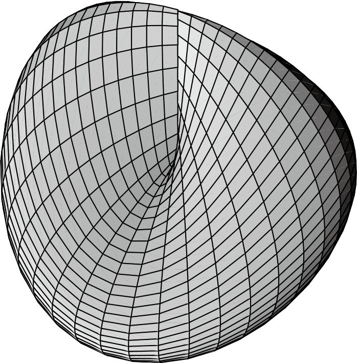
图 AG-3 拓扑意义下的射影平面
注意，这个对象与莫比乌斯带一样，只有一个侧面。如果一只蚂蚁在上面爬行，让它一直向前爬，并且允许它穿过折缝，那么它能到达表面上的每一个点，无论是里面还是外面。看，一个如此幼稚的问题就把你引到了这么远的地方！
※※※
不变量、矩阵及其行列式、对称、拓扑 ——这些都是近世代数的关键概念。事实上，我还没有讨论完圆锥曲线的代数处理。
我在前面提到，椭圆在平面上移动，这是之前观察的方式。还有一种观察的方式，就是将椭圆看作固定在平面内，而坐标系在移动。（你可以这样想，在一张投影片上印上
轴、
轴以及坐标方格，让它在平面上滑动。）
这两种方式都是变换 的例子，这是现代数学中另外一个非常重要的思想。这些特殊的变换，即只改变位置和定向，而不改变距离和形状的变换，被称为等距变换 。它们本身就构成了一个研究领域，我将在第 13 章中详述。除此之外，还有更复杂的变换：仿射变换（允许把某些直线拉伸和“缩短”——将矩形变成平行四边形）、射影变换（像上文所说的那样对图形进行投影）、拓扑变换（随意拉伸或挤压，但不能割裂）、洛伦兹变换（在狭义相对论中）、莫比乌斯变换（在复变函数论中）以及许多其他变换。
※※※
对于前面提到的齐次坐标，我再多说一点，之前我们用三 个数 来确定二 维空间中的一个点。
在高中代数里，我们知道在笛卡儿坐标系下，直线的方程是
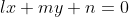
。那么，直线在齐次坐标系下的方程是什么呢？和之前对圆锥曲线的方程做的一样，我们用
和
分别代替
和
，然后化简，可以得到下面的方程：
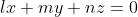
这就是直线在齐次坐标系下的方程。注意观察：这个方程表明直线是由三个系数
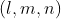
决定的，就像一个点是由它的三个齐次坐标 决定的一样。它更加对称了！于是，这引出了一个问题：在齐次坐标系下，我们能否围绕直线而不是点来构建几何呢？毕竟，就如直线是由无穷多个满足某个线性方程 （其中
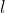
、 、 是定值）的点构成的一样，点是由无穷多条经过这个点的直线构成的。其中每一条直线都满足方程
，不过现在点的坐标
、
、
是固定的，而系数
、
、
可以取无穷多个值，组成经过点
的无穷直线“束”。
是定值）的点构成的一样，点是由无穷多条经过这个点的直线构成的。其中每一条直线都满足方程
，不过现在点的坐标
、
、
是固定的，而系数
、
、
可以取无穷多个值，组成经过点
的无穷直线“束”。
类似地，我们可以不把类似于圆锥曲线的曲线考虑成动点的轨迹，而是把它看成一条动直线的轨迹，如图 AG-4 所示。
图 AG-4 由直线（而不是点）定义的曲线
我们能够根据这种思想构建几何吗？当然可以。这种“直线几何”实际上是由德国数学家尤利乌斯·普吕克（1801—1868）于 1829 年开创的。这也把我们带回到对历史的叙述中。